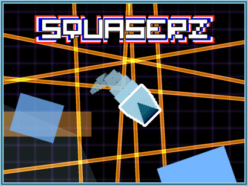
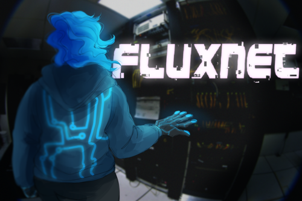
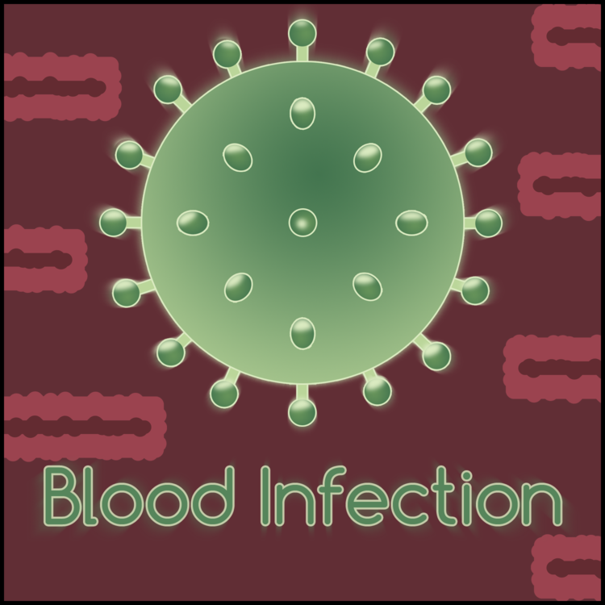

Dream, design, build and rebuild, again and again.
Released Games

SquaserZ
SquaserZ is a fast-paced arcade game featuring simple controls, Game Modifiers that change the way you play, 10 different mission types and a leveling system along with Google Play Services Leaderboards and Achievements.
Roles: Game Design, Audio Editing, Art and Programming.
Technologies used: GameMaker:Studio, Audacity, Adobe Photoshop, HitFilm Express.
Game Jams

FluxNet
Collaboration withBasia Jędruszczak
FluxNet is a CyberPunk Turn Based Arena local multiplayer game for 2 to 4 player with different stages.
This game was created for the GameMaker Studio 2 Beta Jam, as such, this was my first interaction with the new engine from YoYo Games. The revamped room editor was a major help in making this game, since one of its main focus was the level design of each arena.
Roles: Programming, Level and Game design, sound editing .
Technologies used: GameMaker:Studio 2, Audacity.

Blood Infection
Collaboration withGonçalo Marques, Manuel Silva
Blood infection is a relaxing arcade game with simple controls where the objective is to destroy the anti-body generator of the patient.
Roles: Level Designer, Artist.
Technologies used: Adobe Photoshop, Unity Engine.